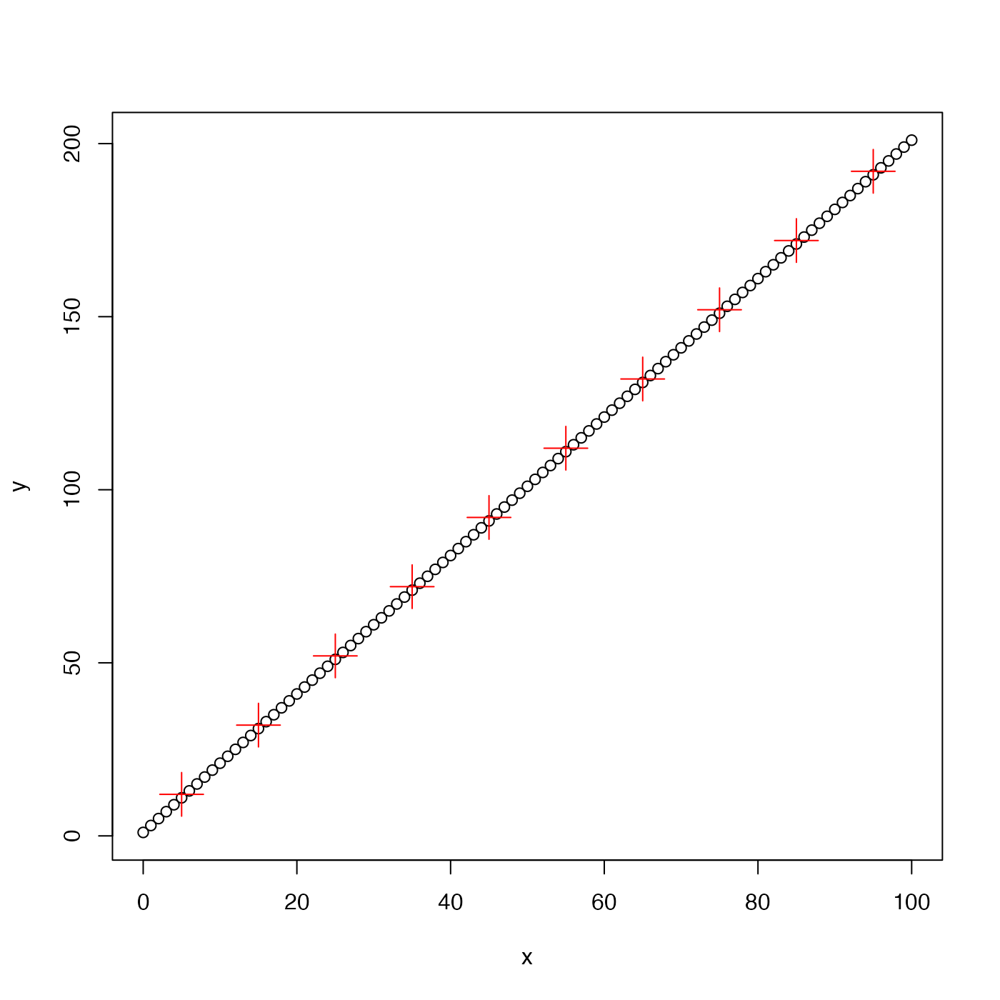
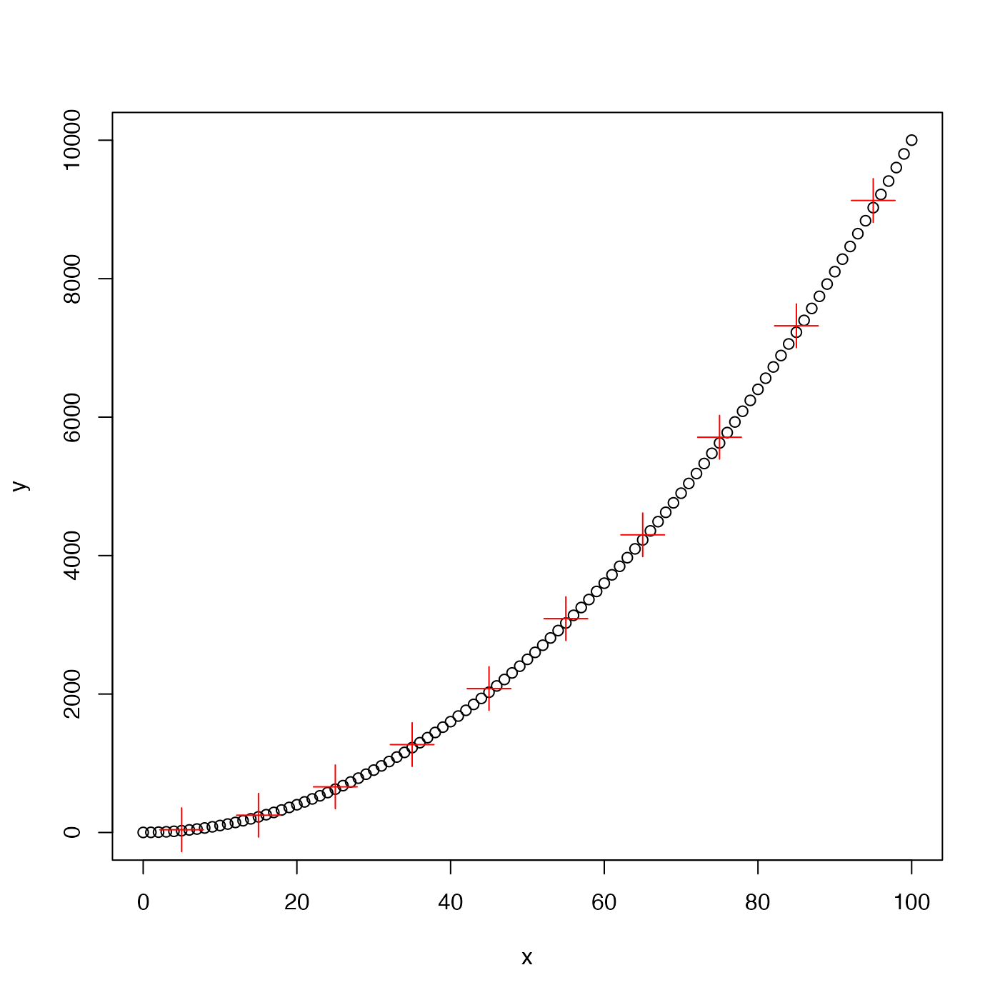
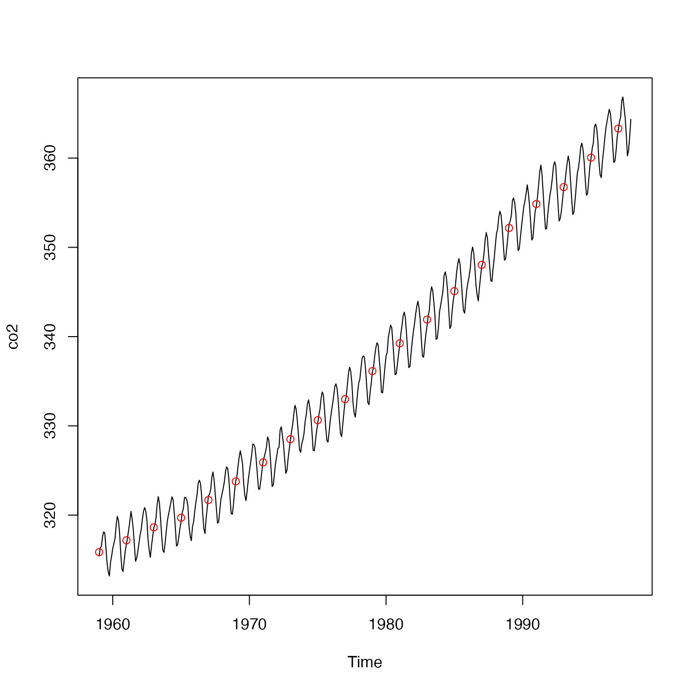

The y vector is averaged in bins defined for x. Missing
values in y are ignored.
binAverage(x, y, xmin, xmax, xinc)a vector of numerical values.
a vector of numerical values.
x value at the lower limit of first bin; the minimum x
will be used if this is not provided.
x value at the upper limit of last bin; the maximum x
will be used if this is not provided.
width of bins, in terms of x value; 1/10th of xmax-xmin
will be used if this is not provided.
A list with two elements: x, the mid-points of the bins, and
y, the average y value in the bins.
Other bin-related functions:
binApply1D(),
binApply2D(),
binCount1D(),
binCount2D(),
binMean1D(),
binMean2D()
library(oce)
## A. fake linear data
x <- seq(0, 100, 1)
y <- 1 + 2 * x
plot(x, y, pch=1)
ba <- binAverage(x, y)
points(ba$x, ba$y, pch=3, col='red', cex=3)

## B. fake quadratic data
y <- 1 + x ^2
plot(x, y, pch=1)
ba <- binAverage(x, y)
points(ba$x, ba$y, pch=3, col='red', cex=3)

## C. natural data
data(co2)
plot(co2)
avg <- binAverage(time(co2), co2, 1950, 2000, 2)
points(avg$x, avg$y, col='red')
